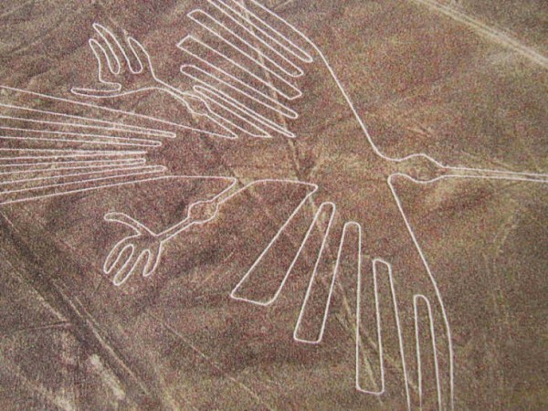
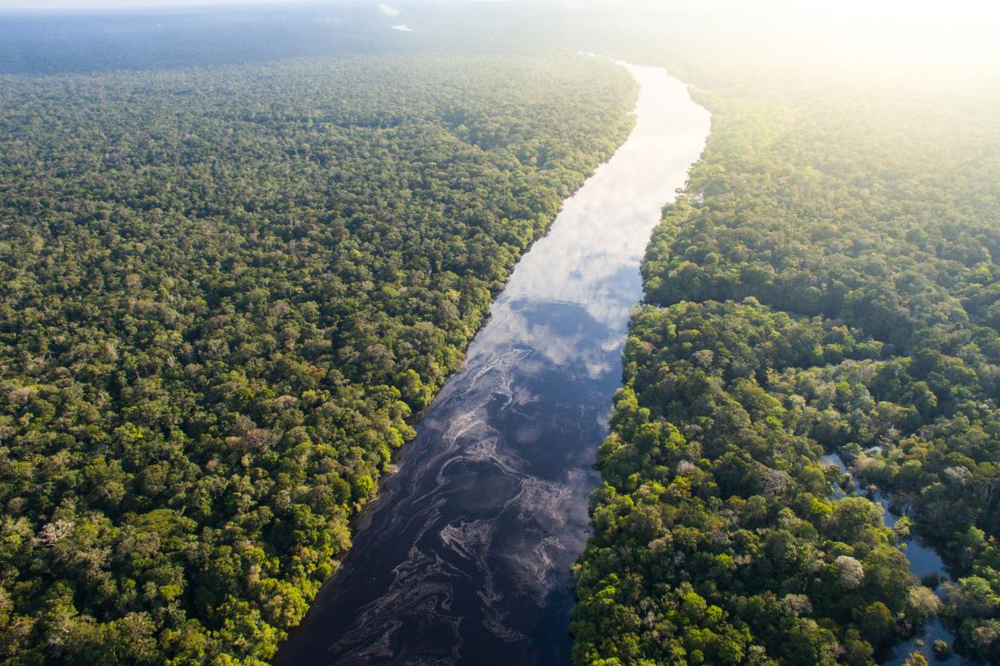

Machu Picchu

Machu Picchu es una ciudadela inca del siglo XV, famosa por su excepcional arquitectura de piedra, su diseño urbano integrado a la topografía y su imponente ubicación en lo alto de una montaña en los Andes. Fue construida durante el gobierno del inca Pachacútec, abandonada tras la conquista española y redescubierta oficialmente por Hiram Bingham en 1911. Hoy es uno de los destinos turísticos más importantes del mundo, un Patrimonio de la Humanidad y una de las siete maravillas del mundo moderno.
Lago Titicaca

El Lago Titicaca es el lago navegable más alto del mundo, ubicado en la frontera entre Bolivia y Perú, a unos 3.800 metros sobre el nivel del mar. Es una importante reserva de agua y un centro cultural con una rica historia ancestral, hogar de pueblos indígenas y famoso por sus islas, como las flotantes de los Uros, construidas con totora. El lago tiene una belleza natural impresionante, con aguas cristalinas y una fauna y flora únicas.
Líneas de Nazca

Las Líneas de Nazca son un conjunto de geoglifos prehistóricos gigantes creados por la cultura Nazca en el desierto de Nazca, Perú, entre los años 200 a.C. y 700 d.C. Estas figuras, que representan animales, plantas, formas humanas y geométricas, solo se aprecian en su totalidad desde el aire y son un Patrimonio de la Humanidad de la UNESCO desde 1994. Su propósito exacto sigue siendo un misterio, aunque se cree que están relacionadas con rituales, el calendario astronómico o la guía hacia fuentes de agua.
Cañón del Colca

El Cañón del Colca es uno de los cañones más profundos del mundo, ubicado en la región de Arequipa, Perú, y es un importante destino turístico por su belleza natural y su riqueza cultural. Es famoso por ser el hogar del cóndor andino, una de las aves más grandes del mundo, y ofrece actividades como trekking, avistamiento de cóndores en miradores como la Cruz del Cóndor, y turismo comunitario en pueblos como Chivay y Yanque..
Selva Amazónica

La Amazonía es la selva tropical más grande del mundo, ubicada en Sudamérica y extendiéndose por nueve países. Es un ecosistema de una biodiversidad inigualable, con millones de especies de plantas, insectos, aves y mamíferos, y hogar de unos 400 pueblos indígenas. Este vasto bosque juega un papel vital para el clima global al regular las lluvias y almacenar enormes cantidades de carbono, aunque enfrenta amenazas como la deforestación, la minería y los incendios, señalan The Nature Conservancy, WWF, Nature and Culture International, Cool Earth, Fundación Aquae, Wikipedia, El Tiempo, World Wildlife Fund, y National Geographic.